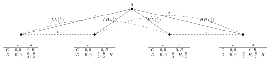
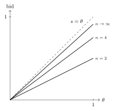

4 Static Games with Incomplete Information
\[ \newcommand{\E}{\mathbb{E}} \newcommand{\R}{\mathbb{R}} \newcommand{\Prob}{\mathbb{P}} \newcommand{\BR}{\operatorname{BR}} \newcommand{\eps}{\varepsilon} \newcommand{\given}{\,\vert\,} \newcommand{\argmax}{\operatorname*{arg\,max}} \newcommand{\argmin}{\operatorname*{arg\,min}} \newcommand{\sm}{\setminus} \newcommand{\defeq}{\equiv} \]
So far players have known everything about the game they are playing. But in many strategic situations a player is uncertain about something fundamental — a rival’s costs, a buyer’s valuation, an opponent’s preferences. This chapter develops the model of incomplete information, in which each player has a privately known type. The central device, due to John Harsanyi, is to let a fictitious player “Nature” draw the types at the start of the game, converting incomplete information into an extensive-form game of imperfect information that we can analyse with the tools of Chapter 3. The resulting equilibrium concept is the Bayesian Nash equilibrium, and we put it to work on Cournot competition, public-good provision, the market for lemons, jury voting, the purification of mixed strategies, and the theory of auctions.
4.1 A motivating example
Two teenagers drive toward each other; each can swerve (be “chicken”) or continue straight. In the complete-information game of Chicken, player 1 chooses a row \(C\) (swerve) or \(D\) (drive on) and player 2 a column \(c\) or \(d\):
| \(c\) | \(d\) | |
|---|---|---|
| \(C\) | \(0,\,0\) | \(0,\,R\) |
| \(D\) | \(R,\,0\) | \(\tfrac{R}{2}-k,\ \tfrac{R}{2}-k\) |
Here \(R>0\) is the prize (the respect won by the bolder driver) and \(k\ge 0\) is the punishment — the personal cost of a collision, which depends on how harshly a teenager’s parents will react.
Now suppose the punishment is each player’s private information. A teenager’s parents are harsh (\(k_i = H\), “high”) or lenient (\(k_i = L\), “low”), each with probability \(\tfrac12\), independently across the two players. Player \(i\) knows his own \(k_i\) but not his rival’s. This is a game of incomplete information: the payoffs depend on something — the rival’s \(k\) — that a player does not observe.
Harsanyi’s idea. Introduce a fictitious player \(0\), Nature, who moves first and draws the type profile \((k_1,k_2)\) from \(\{LL, LH, HL, HH\}\), each with probability \(\tfrac14\) (a fixed behaviour strategy). Player 1 observes \(k_1\) but not \(k_2\); player 2 observes \(k_2\) but neither \(k_1\) nor player 1’s choice; players 1 and 2 then move simultaneously. This is an extensive-form game of imperfect information (Figure 4.1). The dashed lines are information sets: player 1’s two information sets group the nodes sharing \(k_1=L\) (after \(LL\) and \(LH\)) and those sharing \(k_1=H\) (after \(HL\) and \(HH\)); player 2’s two information sets group the nodes sharing \(k_2=L\) (after \(LL\) and \(HL\)) and those sharing \(k_2=H\) (after \(LH\) and \(HH\)).

Because player 1 has two information sets and a binary action at each, he has four strategies, \(S_1 = \{CC, CD, DC, DD\}\), under the convention that the first letter is the action when \(k_1 = L\) and the second when \(k_1 = H\) — so \(DC\) means “drive on if lenient, swerve if harsh.” Likewise \(S_2 = \{cc, cd, dc, dd\}\), with the first letter the action when \(k_2 = L\).
For a profile \((A_L A_H,\, a_L a_H)\), Nature’s draw makes the outcome a lottery, \[ \tfrac14\,(LL, A_L, a_L) + \tfrac14\,(LH, A_L, a_H) + \tfrac14\,(HL, A_H, a_L) + \tfrac14\,(HH, A_H, a_H), \] so the expected payoffs are \[ \tilde v_1(A_L A_H, a_L a_H) = \tfrac14 v_1(A_L,a_L; L) + \tfrac14 v_1(A_L,a_H; L) + \tfrac14 v_1(A_H,a_L; H) + \tfrac14 v_1(A_H,a_H; H), \] \[ \tilde v_2(A_L A_H, a_L a_H) = \tfrac14 v_2(A_L,a_L; L) + \tfrac14 v_2(A_L,a_H; H) + \tfrac14 v_2(A_H,a_L; L) + \tfrac14 v_2(A_H,a_H; H). \] This reduces the game to an ordinary \(4\times 4\) normal form. With the numerical values \(R = 8\), \(H = 16\), \(L = 0\), the bimatrix is
| \(cc\) | \(cd\) | \(dc\) | \(dd\) | |
|---|---|---|---|---|
| \(CC\) | \(0,\,0\) | \(0,\,4\) | \(0,\,4\) | \(0,\,8\) |
| \(CD\) | \(4,\,0\) | \(-1,\,-1\) | \(-1,\,3\) | \(-6,\,2\) |
| \(DC\) | \(4,\,0\) | \(3,\,-1\) | \(3,\,3\) | \(2,\,2\) |
| \(DD\) | \(8,\,0\) | \(2,\,-6\) | \(2,\,2\) | \(-4,\,-4\) |
Checking best responses cell by cell, the game has a unique pure-strategy Nash equilibrium, \((DC, dc)\). Reading off the convention: a teenager with harsh parents (\(k_i = H\)) swerves, while a teenager with lenient parents (\(k_i = L\)) drives on. The threat of severe punishment makes the harsh-parented type back down, exactly as intuition would suggest — and the analysis required nothing beyond turning the incomplete-information game into a familiar extensive form.
4.2 Bayesian games
The Harsanyi recipe generalises. Each player \(i\) has a type \(\theta_i\) summarising his privately known characteristics, drawn from a type space \(\Theta_i\). Write \(\Theta = \Theta_1 \times \cdots \times \Theta_n\) for the set of type profiles and \(A = A_1 \times \cdots \times A_n\) for the set of action profiles. Payoffs may depend on the whole type profile, \(v_i : A \times \Theta \to \R\). The distribution of types is governed by a common prior — a single probability distribution over \(\Theta\) that is common knowledge.
Definition 4.1 (Bayesian game) The normal-form representation of an \(n\)-player Bayesian game (or static game of incomplete information) is the tuple \[ \big(N,\ \{A_i\}_{i=1}^n,\ \{\Theta_i\}_{i=1}^n,\ \{v_i\}_{i=1}^n,\ \Prob\big), \] where
- \(N = \{1, 2, \dots, n\}\) is the set of players;
- \(A_i\) is player \(i\)’s action space;
- \(\Theta_i\) is player \(i\)’s type space, and each \(\theta_i \in \Theta_i\) is a type;
- \(v_i : A \times \Theta \to \R\) is player \(i\)’s payoff function, so \(v_i(a;\theta)\) is \(i\)’s payoff when the action profile is \(a\) and the type profile is \(\theta\);
- \(\Prob\) is the common prior, a probability distribution over \(\Theta\).
Beliefs from the prior. Once player \(i\) learns his own type \(\theta_i\), he updates his beliefs about the others’ types \(\theta_{-i}\) by Bayes’ rule. Recall that for a distribution \(\Prob\) on a space \(X\) and events \(A, B\) with \(\Prob(A) > 0\), \[ \Prob(B \given A) \defeq \frac{\Prob(B \cap A)}{\Prob(A)}. \] Applying this to \(\Prob\) over \(\Theta\), player \(i\)’s posterior belief about \(\theta_{-i}\) given own type \(\theta_i\) is \[ \phi_i(\theta_{-i} \given \theta_i) = \frac{\Prob(\theta_i, \theta_{-i})}{\Prob(\theta_i)}, \qquad \Prob(\theta_i) = \sum_{\theta'_{-i} \in \Theta_{-i}} \Prob(\theta_i, \theta'_{-i}), \] where \(\Prob(\theta_i)\) is the marginal probability of \(i\) being type \(\theta_i\).
In the Chicken example, types are independent and uniform, so each player’s posterior is just the marginal: \(\phi_i(H \given \theta_i) = \phi_i(L \given \theta_i) = \tfrac12\) for either own type. The prior need not make types independent, however. With the correlated prior
| \(L\) | \(H\) | |
|---|---|---|
| \(L\) | \(1/3\) | \(1/6\) |
| \(H\) | \(1/6\) | \(1/3\) |
the posteriors become \(\phi_i(L\given L) = \tfrac23\), \(\phi_i(H\given L) = \tfrac13\), \(\phi_i(L\given H) = \tfrac13\), \(\phi_i(H\given H) = \tfrac23\): different types hold different beliefs, and every type thinks the opponent is more likely to be the same type as himself.
A strategy must specify what to do as a function of one’s type.
Definition 4.2 (Strategies in a Bayesian game) In a Bayesian game \(\big(N, \{A_i\}, \{\Theta_i\}, \{v_i\}, \Prob\big)\):
- a pure strategy for player \(i\) is a function \(s_i : \Theta_i \to A_i\) specifying the action \(s_i(\theta_i)\) that \(i\) chooses when his type is \(\theta_i\);
- a mixed strategy is a function \(\sigma_i : \Theta_i \to \Delta(A_i)\) specifying a mixed action \(\sigma_i(\theta_i)\) for each type.
A strategy is thus a complete type-contingent plan. In the equivalent extensive form, where each type is an information set, a pure strategy is a map from information sets to actions and a mixed strategy is a behavioural strategy. Given the opponents’ profile \(s_{-i}\), the expected payoff to player \(i\) of type \(\theta_i\) from choosing action \(a_i\) is computed against his posterior beliefs: \[ \sum_{\theta_{-i} \in \Theta_{-i}} \phi_i(\theta_{-i} \given \theta_i)\, v_i\big(a_i, s_{-i}(\theta_{-i});\ \theta_i, \theta_{-i}\big). \]
The equilibrium concept now requires that every type of every player be playing a best response in this conditional sense.
Definition 4.3 (Bayesian Nash equilibrium) In the Bayesian game \(\big(N, \{A_i\}, \{\Theta_i\}, \{v_i\}, \Prob\big)\), a strategy profile \(s^* = (s_1^*, \dots, s_n^*)\) is a (pure-strategy) Bayesian Nash equilibrium (BNE) if for every player \(i\) and every type \(\theta_i \in \Theta_i\), \[ \sum_{\theta_{-i}} \phi_i(\theta_{-i} \given \theta_i)\, v_i\big(s_i^*(\theta_i), s_{-i}^*(\theta_{-i});\ \theta_i, \theta_{-i}\big) \ \ge\ \sum_{\theta_{-i}} \phi_i(\theta_{-i} \given \theta_i)\, v_i\big(a_i, s_{-i}^*(\theta_{-i});\ \theta_i, \theta_{-i}\big) \quad \text{for all } a_i \in A_i. \tag{4.1}\] A mixed-strategy BNE is defined analogously.
The condition says that no type of any player wants to deviate. The next result confirms that this is exactly the Nash equilibrium of the Harsanyi extensive form, so the two views agree.
Theorem 4.1 (BNE equals NE of the extensive form) In any Bayesian game, a strategy profile is a Bayesian Nash equilibrium if and only if it is a Nash equilibrium of the equivalent extensive-form game with Nature (Definition 3.1).
Proof. (Only if: BNE \(\Rightarrow\) NE.) Let \(s^*\) satisfy Equation 4.1 and fix any player \(i\) and any alternative strategy \(s_i\) of the extensive form. Applying Equation 4.1 with \(a_i = s_i(\theta_i)\) gives, for each type \(\theta_i\), \[ \sum_{\theta_{-i}} \phi_i(\theta_{-i} \given \theta_i)\, v_i\big(s_i^*(\theta_i), s_{-i}^*(\theta_{-i});\ \theta_i, \theta_{-i}\big) \ \ge\ \sum_{\theta_{-i}} \phi_i(\theta_{-i} \given \theta_i)\, v_i\big(s_i(\theta_i), s_{-i}^*(\theta_{-i});\ \theta_i, \theta_{-i}\big). \] Multiply both sides by \(\Prob(\theta_i)\) and sum over \(\theta_i \in \Theta_i\): \[ \sum_{\theta_i} \Prob(\theta_i) \sum_{\theta_{-i}} \phi_i(\theta_{-i} \given \theta_i)\, v_i\big(s_i^*(\theta_i), s_{-i}^*(\theta_{-i});\ \theta_i, \theta_{-i}\big) \ \ge\ \sum_{\theta_i} \Prob(\theta_i) \sum_{\theta_{-i}} \phi_i(\theta_{-i} \given \theta_i)\, v_i\big(s_i(\theta_i), s_{-i}^*(\theta_{-i});\ \theta_i, \theta_{-i}\big). \] Because \(\Prob(\theta_i)\,\phi_i(\theta_{-i} \given \theta_i) = \Prob(\theta_i, \theta_{-i}) = \Prob(\theta)\), the double sums collapse to single sums over \(\theta \in \Theta\): \[ \sum_{\theta \in \Theta} \Prob(\theta)\, v_i\big(s_i^*(\theta_i), s_{-i}^*(\theta_{-i});\ \theta\big) \ \ge\ \sum_{\theta \in \Theta} \Prob(\theta)\, v_i\big(s_i(\theta_i), s_{-i}^*(\theta_{-i});\ \theta\big). \] The left side is \(i\)’s expected payoff in the extensive form from \((s_i^*, s_{-i}^*)\) and the right side that from \((s_i, s_{-i}^*)\). Since \(s_i\) was arbitrary, \(s^*\) is a Nash equilibrium of the extensive form.
(If: NE \(\Rightarrow\) BNE.) We argue the contrapositive. Suppose Equation 4.1 fails for some player \(i\) of some type \(\hat\theta_i\): there is an action \(\hat a_i\) with \[ \sum_{\theta_{-i}} \phi_i(\theta_{-i} \given \hat\theta_i)\, v_i\big(\hat a_i, s_{-i}^*(\theta_{-i});\ \hat\theta_i, \theta_{-i}\big) \ >\ \sum_{\theta_{-i}} \phi_i(\theta_{-i} \given \hat\theta_i)\, v_i\big(s_i^*(\hat\theta_i), s_{-i}^*(\theta_{-i});\ \hat\theta_i, \theta_{-i}\big). \] Define the strategy \[ s_i(\theta_i) = \begin{cases} \hat a_i, & \theta_i = \hat\theta_i,\\ s_i^*(\theta_i), & \theta_i \ne \hat\theta_i, \end{cases} \] which differs from \(s_i^*\) only at \(\hat\theta_i\). Multiplying by priors and summing over types exactly as in the first part (the inequality is strict at \(\hat\theta_i\) and an equality at every other type) yields \[ \sum_{\theta \in \Theta} \Prob(\theta)\, v_i\big(s_i(\theta_i), s_{-i}^*(\theta_{-i});\ \theta\big) \ >\ \sum_{\theta \in \Theta} \Prob(\theta)\, v_i\big(s_i^*(\theta_i), s_{-i}^*(\theta_{-i});\ \theta\big). \] So \(s_i^*\) is not a best response to \(s_{-i}^*\) in the extensive form, and \(s^*\) is not a Nash equilibrium of it. \(\square\)
Inspecting Definition 4.3, the prior \(\Prob\) enters only through the posterior beliefs \(\{\phi_i\}\). One may therefore specify the system of posterior beliefs \(\{\phi_i\}\) directly, and the BNE definition still applies. This enlarges the scope of Bayesian games to settings without a common prior — at the cost that such a game can no longer be transformed into an equivalent extensive form with a single Nature move.
A no-common-prior belief system genuinely exists. Take two types \(H, L\) for each player and the beliefs \[ \phi_1 = \begin{pmatrix} 1 & 0 \\ 0 & 1 \end{pmatrix}, \qquad \phi_2 = \begin{pmatrix} 0 & 1 \\ 1 & 0 \end{pmatrix}, \] where the rows of \(\phi_1\) are player 1’s own type \(\theta_1 \in \{H, L\}\) and the columns are \(\theta_2 \in \{H, L\}\) (and symmetrically for \(\phi_2\)). Suppose a common prior \(\Prob\) generated these. From \(\phi_1\), type \(H\) of player 1 is sure the opponent is \(H\), so \(\Prob(\theta_1 = H, \theta_2 = L) = 0\). But from \(\phi_2\), type \(H\) of player 2 is sure player 1 is \(L\), which forces \(\Prob(\theta_1 = H, \theta_2 = L) > 0\). Contradiction — no common prior exists.
4.3 Examples
Cournot duopoly with private cost
Return to Cournot competition (Chapter 2), but now firm 1’s marginal cost is private. It is high, \(c_h\), with probability \(\theta \in (0,1)\), or low, \(c_\ell\), with probability \(1 - \theta\); only firm 1 knows which. Firm 2’s cost \(c_2\) is common knowledge. The two firms choose quantities simultaneously, and inverse demand is \(P(q) = \max\{a - q, 0\}\).
Firm 1’s strategy is a type-contingent pair \((q_h, q_\ell) \in \R_+^2\) (output when high-cost and when low-cost); firm 2’s strategy is a single \(q_2 \in \R_+\). A profile \((q_h^*, q_\ell^*, q_2^*)\) is a BNE if and only if each component maximises the relevant (expected) profit: \[ q_h^* \in \argmax_{q_h \ge 0} \big[P(q_h + q_2^*) - c_h\big] q_h, \qquad q_\ell^* \in \argmax_{q_\ell \ge 0} \big[P(q_\ell + q_2^*) - c_\ell\big] q_\ell, \] \[ q_2^* \in \argmax_{q_2 \ge 0} \Big\{ \theta\big[P(q_h^* + q_2) - c_2\big] q_2 + (1-\theta)\big[P(q_\ell^* + q_2) - c_2\big] q_2 \Big\}. \] Note that firm 2, not knowing firm 1’s cost, maximises expected profit, weighting the two cost states by their probabilities. With \(P(q) = a - q\), the first-order conditions give the best-response system \[ q_h^* = \frac{a - q_2^* - c_h}{2}, \qquad q_\ell^* = \frac{a - q_2^* - c_\ell}{2}, \qquad q_2^* = \frac{a - \theta q_h^* - (1-\theta) q_\ell^* - c_2}{2}. \] Solving this linear system yields the closed form \[ q_h^* = \frac{a - 2c_h + c_2}{3} + \frac{1 - \theta}{6}(c_h - c_\ell), \] \[ q_\ell^* = \frac{a - 2c_\ell + c_2}{3} - \frac{\theta}{6}(c_h - c_\ell), \] \[ q_2^* = \frac{a - 2c_2 + \theta c_h + (1-\theta) c_\ell}{3}. \] The benchmark complete-information Cournot outputs are recovered by setting \(c_h = c_\ell\). The new feature is the correction term \(\pm\frac{1}{6}(c_h - c_\ell)\) in firm 1’s outputs: relative to a firm that knew its own cost and faced a rival who knew it too, the high-cost type produces a little more and the low-cost type a little less, because firm 2 hedges against firm 1’s uncertain cost and firm 1 responds to that hedging.
Study groups
Two students submit a joint lab report. Each \(i\) either exerts effort (\(e_i = 1\)) at cost \(c\), with \(0 < c < 1\), or shirks (\(e_i = 0\)) at no cost. If at least one exerts effort, the lab is a success; if both shirk, it fails. A failure is worth \(0\) to both. A success is worth \(\theta_i^2\) to student \(i\), where the type \(\theta_i\) is private information, and \(\theta_1, \theta_2\) are independent and uniform on \([0,1]\). This is a voluntary contribution to a public good.
A strategy is a function \(\sigma_i : [0,1] \to [0,1]\), where \(\sigma_i(\theta_i)\) is the probability that type \(\theta_i\) exerts effort. From the other student’s perspective, the probability that \(i\) exerts effort is \[ p^{\sigma_i} = \int_0^1 \sigma_i(\theta_i)\, f(\theta_i)\,\mathrm d\theta_i = \int_0^1 \sigma_i(\theta_i)\,\mathrm d\theta_i, \] since the density \(f \equiv 1\) on \([0,1]\). Consider student 1 of type \(\theta_1\) facing \(\sigma_2\). Exerting effort guarantees success and pays \(\theta_1^2 - c\). Shirking yields a success — worth \(\theta_1^2\) — only if student 2 exerts effort, which happens with probability \(p^{\sigma_2}\), for an expected payoff \(p^{\sigma_2}\theta_1^2\). So effort is optimal exactly when \(\theta_1^2 - c > p^{\sigma_2}\theta_1^2\), i.e. \(\theta_1^2 > c/(1 - p^{\sigma_2})\). The best response is the cutoff (threshold) strategy \[ \sigma_1(\theta_1) = \begin{cases} 1, & \theta_1^2 > c/(1 - p^{\sigma_2}),\\ 0, & \theta_1^2 < c/(1 - p^{\sigma_2}), \end{cases} \tag{4.2}\] with threshold \(\hat\theta_1 = \sqrt{c/(1 - p^{\sigma_2})}\), and symmetrically \[ \sigma_2(\theta_2) = \begin{cases} 1, & \theta_2^2 > c/(1 - p^{\sigma_1}),\\ 0, & \theta_2^2 < c/(1 - p^{\sigma_1}). \end{cases} \tag{4.3}\] Higher types — who value success more — work; lower types free-ride. Integrating the cutoff rules gives the fixed-point equations for the effort probabilities, \[ p^{\sigma_1} = 1 - \min\!\Big\{1,\ \sqrt{c/(1 - p^{\sigma_2})}\Big\}, \tag{4.4}\] \[ p^{\sigma_2} = 1 - \min\!\Big\{1,\ \sqrt{c/(1 - p^{\sigma_1})}\Big\}. \tag{4.5}\] For \(0 < c < 1\) this system has a unique solution, \(p^{\sigma_1} = p^{\sigma_2} = 1 - c^{1/3}\), giving an essentially unique BNE with cutoff \(c^{1/3}\): \[ \sigma_i^*(\theta_i) = \begin{cases} 1, & \theta_i > c^{1/3},\\ 0, & \theta_i < c^{1/3}. \end{cases} \] (“Essentially” because the borderline type \(\theta_i = c^{1/3}\) may play any \(\sigma_i(\theta_i) \in [0,1]\) without affecting anything, the event having probability zero.) Only sufficiently high types contribute, and the free-riding that besets public goods reappears here through the cutoff.
4.4 Applications
Adverse selection: the market for lemons
Player 1 owns a used car and wishes to sell it to player 2. The car’s mechanical condition is player 1’s private information. Player 2 believes it is poor (\(P\)), fair (\(F\)), or good (\(G\)), each with probability \(\tfrac13\). The seller’s reservation value \(v_1(\theta)\) and the buyer’s willingness to pay \(v_2(\theta)\) are \[ v_1(\theta) = \begin{cases} 10, & \theta = P\\ 20, & \theta = F\\ 30, & \theta = G \end{cases} \qquad\qquad v_2(\theta) = \begin{cases} 14, & \theta = P\\ 24, & \theta = F\\ 34, & \theta = G. \end{cases} \] The buyer values the car more than the seller in every state (\(v_2 > v_1\)), so trade is always efficient.
Complete-information benchmark. If the condition were commonly known, model the trade as an ultimatum game: player 2 announces a price \(p\), and player 1 accepts or rejects (no trade if rejected). The unique subgame-perfect outcome (Definition 3.11) has the buyer offer exactly the seller’s reservation value: trade occurs at \(p = 10\) if \(\theta = P\), at \(p = 20\) if \(\theta = F\), and at \(p = 30\) if \(\theta = G\). Trade always occurs, and the outcome is efficient.
Private information. Now the condition is known only to the seller. Model the encounter as a (simultaneous-move) Bayesian game in which the seller of type \(\theta\) chooses an acceptance plan \(s_1^\theta : \R \to \{a, r\}\) — accept or reject as a function of the price. We show that good and fair cars never trade.
Step 1 — the good type cannot sell. Suppose, toward a contradiction, that in equilibrium the good type accepts the equilibrium price, \(s_1^G(p) = a\). Acceptance by the good type requires \(p \ge 30\); but then \(p \ge 30 \ge v_1(F) \ge v_1(P)\), so the fair and poor types accept as well, \(s_1^F(p) = s_1^P(p) = a\). Facing all three types with equal probability, the buyer’s expected payoff from \(p\) is \[ \tfrac13 v_2(P) + \tfrac13 v_2(F) + \tfrac13 v_2(G) - p = 24 - p < 0, \] since \(p \ge 30\). By deviating to \(p' = 0\) (which no type accepts) the buyer secures at least \(0\) — a profitable deviation. Contradiction.
Step 2 — the fair type cannot sell. Knowing the good type never sells at the equilibrium price, suppose the fair type accepts, \(s_1^F(p) = a\). This requires \(p \ge 20\), so the poor type also accepts, \(s_1^P(p) = a\). Conditioning on the two types who would trade, the buyer’s expected payoff is \[ \tfrac12 v_2(P) + \tfrac12 v_2(F) - p = 19 - p < 0, \] since \(p \ge 20\). Again deviating to \(p' = 0\) gives at least \(0\). Contradiction.
Conclusion. In any BNE the fair and good cars are not sold. There is a BNE in which only the poor car trades, at \(p = 10\), with each type following the reservation rule \[ s_1^\theta(p) = \begin{cases} a, & p \ge v_1(\theta),\\ r, & p < v_1(\theta). \end{cases} \] Only the lowest-quality cars remain on the market and trade; the fair and good cars, which it would be efficient to sell, do not. This is adverse selection: asymmetric information drives high-quality sellers out and selects sellers adverse to the buyer, producing an inefficient outcome even though complete-information trade is fully efficient. The phenomenon was identified by George Akerlof (Nobel Prize, 2001) in his “market for lemons.”
Committee and jury voting
Two jurors must collectively decide to acquit (\(A\)) or convict (\(C\)). Under the unanimity rule the defendant is convicted only if both vote \(C\). The defendant is guilty (\(G\)) or innocent (\(I\)), with prior \(\Prob(G) = q > \tfrac12\). Each juror wants the correct verdict, with payoff \(1\) for a correct decision and \(0\) otherwise. In state \(G\) the right verdict is to convict, so the payoff matrix is
| \(A\) | \(C\) | |
|---|---|---|
| \(A\) | \(0,\,0\) | \(0,\,0\) |
| \(C\) | \(0,\,0\) | \(1,\,1\) |
while in state \(I\) acquittal is right (and unanimity means conviction requires both \(C\)):
| \(A\) | \(C\) | |
|---|---|---|
| \(A\) | \(1,\,1\) | \(1,\,1\) |
| \(C\) | \(1,\,1\) | \(0,\,0\) |
Symmetric-information benchmark. If jurors had only the prior and no further information, they would play the expected-payoff game
| \(A\) | \(C\) | |
|---|---|---|
| \(A\) | \(1-q,\,1-q\) | \(1-q,\,1-q\) |
| \(C\) | \(1-q,\,1-q\) | \(q,\,q\) |
which has two Nash equilibria, \((A,A)\) and \((C,C)\).
Private signals. Now each juror \(i\) receives a private signal \(\theta_i \in \{\theta_G, \theta_I\}\) correlated with the truth: \[ \Prob(\theta_i = \theta_G \given G) = \Prob(\theta_i = \theta_I \given I) = p > \tfrac12, \qquad \Prob(\theta_i = \theta_I \given G) = \Prob(\theta_i = \theta_G \given I) = 1 - p. \] The signal \(\theta_x\) is more likely in state \(x\); a larger \(p\) means a more informative signal. Signals are conditionally independent across jurors.
Single-voter posteriors. For one juror, Bayes’ rule gives \[ \Prob(G \given \theta_1 = \theta_G) = \frac{qp}{qp + (1-q)(1-p)} > q > \tfrac12, \qquad \Prob(G \given \theta_1 = \theta_I) = \frac{q(1-p)}{q(1-p) + (1-q)p} < q. \] A “guilty” signal makes a lone juror more sure of guilt; an “innocent” signal makes him less sure. With a single decision-maker, if \(p > q\) the innocent signal is informative enough to flip him to acquittal, while if \(p < q\) the prior dominates and he still convicts.
Voting one’s own signal is not a BNE. Suppose juror 2 “votes her signal,” \(\sigma_2(\theta_G) = c\) and \(\sigma_2(\theta_I) = a\), and consider juror 1 who has received \(\theta_1 = \theta_I\). Conditioning on \(\theta_1 = \theta_I\), the joint posterior over \((\text{state}, \theta_2)\) is
| \(\theta_2 = \theta_G\) | \(\theta_2 = \theta_I\) | |
|---|---|---|
| \(G\) | \(q(1-p)p / \Prob(\theta_1 = \theta_I)\) | \(q(1-p)^2 / \Prob(\theta_1 = \theta_I)\) |
| \(I\) | \((1-q)p(1-p) / \Prob(\theta_1=\theta_I)\) | \((1-q)p^2 / \Prob(\theta_1 = \theta_I)\) |
where \(\Prob(\theta_1 = \theta_I) = q(1-p)p + q(1-p)^2 + (1-q)p(1-p) + (1-q)p^2 = q(1-p) + (1-q)p\) (the sum of the four cell numerators above). If juror 1 acquits (\(a\)), the verdict is acquit regardless of juror 2, which is correct precisely in state \(I\), giving expected payoff \[ \frac{(1-q)p(1-p) + (1-q)p^2}{\Prob(\theta_1 = \theta_I)}. \] If juror 1 convicts (\(c\)), the verdict is convict only when juror 2 also votes \(c\) (i.e. \(\theta_2 = \theta_G\)), which is correct only in state \(G\); the expected payoff is \[ \frac{q(1-p)p + (1-q)p^2}{\Prob(\theta_1 = \theta_I)}. \] Comparing numerators, conviction does at least as well whenever \(q(1-p)p \ge (1-q)p(1-p)\), i.e. \(q \ge 1-q\), which holds because \(q > \tfrac12\). So juror 1 prefers to convict despite his “innocent” signal — and voting one’s own signal is not a Bayesian Nash equilibrium.
The resolution is the logic of pivotal voting. Under unanimity, juror 1’s vote matters only when juror 2 votes to convict (\(\theta_2 = \theta_G\)); if juror 2 acquits, the verdict is acquittal whatever juror 1 does. A rational juror therefore conditions not just on his own signal but on the event that he is pivotal. Even though it may be that \(\Prob(G \given \theta_1 = \theta_I) < \Prob(I \given \theta_1 = \theta_I)\) when \(p > q\), conditioning on being pivotal always tilts toward guilt: \[ \frac{\Prob(G, \theta_2 = \theta_G \given \theta_1 = \theta_I)} {\Prob(I, \theta_2 = \theta_G \given \theta_1 = \theta_I)} = \frac{\Prob(G, \theta_1 = \theta_I, \theta_2 = \theta_G)} {\Prob(I, \theta_1 = \theta_I, \theta_2 = \theta_G)} = \frac{q(1-p)p}{(1-q)p(1-p)} = \frac{q}{1-q} > 1. \] Being pivotal means juror 2 saw a guilty signal, which is bad news for the defendant — so even a juror with an innocent signal may rationally vote to convict.
Purification of mixed strategies
Recall Matching Pennies, the zero-sum game
| \(H\) | \(T\) | |
|---|---|---|
| \(H\) | \(1,\,-1\) | \(-1,\,1\) |
| \(T\) | \(-1,\,1\) | \(1,\,-1\) |
Its unique Nash equilibrium has each player mixing \(\tfrac12 H + \tfrac12 T\), with each player exactly indifferent between \(H\) and \(T\). Harsanyi found this knife-edge precision uncomfortable: do players really randomise so finely when indifferent? His purification answer: players may always have a slight strict preference one way or the other; the apparent mixing is an artefact of an outside observer’s imprecise information about those preferences.
Perturb the payoffs with small, privately known shocks:
| \(H\) | \(T\) | |
|---|---|---|
| \(H\) | \(1+\eps_1,\ -1+\eps_2\) | \(-1+\eps_1,\ 1\) |
| \(T\) | \(-1,\ 1+\eps_2\) | \(1,\ -1\) |
Here \(\eps_1, \eps_2\) are independent and uniform on \([-\eps, \eps]\) for a small \(\eps > 0\), and \(\eps_i\) is player \(i\)’s private information (his type). A strategy is \(\sigma_i : [-\eps, \eps] \to [0,1]\), where \(\sigma_i(\eps_i)\) is the probability that type \(\eps_i\) plays \(H\). From the opponent’s view the probability that \(i\) plays \(H\) is \[ p^{\sigma_i} \defeq \int_{-\eps}^{\eps} \sigma_i(\eps_i)\, f(\eps_i)\,\mathrm d\eps_i = \frac{1}{2\eps} \int_{-\eps}^{\eps} \sigma_i(\eps_i)\,\mathrm d\eps_i, \qquad f(\eps_i) = \frac{1}{2\eps}. \] For player 1 of type \(\eps_1\), playing \(H\) pays \((1 + \eps_1)p^{\sigma_2} + (-1 + \eps_1)(1 - p^{\sigma_2}) = 2p^{\sigma_2} - 1 + \eps_1\), while playing \(T\) pays \(-p^{\sigma_2} + (1 - p^{\sigma_2}) = -2p^{\sigma_2} + 1\). So \(H\) is better exactly when \(\eps_1 > 2 - 4p^{\sigma_2}\), giving the cutoff best response and the induced probability \[ \sigma_1(\eps_1) = \begin{cases} 1, & \eps_1 > 2 - 4p^{\sigma_2},\\ 0, & \eps_1 < 2 - 4p^{\sigma_2}, \end{cases} \qquad p^{\sigma_1} = \begin{cases} 1, & 2 - 4p^{\sigma_2} \le -\eps,\\[2pt] \dfrac{\eps - 2 + 4p^{\sigma_2}}{2\eps}, & -\eps < 2 - 4p^{\sigma_2} < \eps,\\[4pt] 0, & 2 - 4p^{\sigma_2} \ge \eps. \end{cases} \tag{4.6}\] Symmetrically, player 2 prefers \(H\) when \(\eps_2 > 4p^{\sigma_1} - 2\), so \[ \sigma_2(\eps_2) = \begin{cases} 1, & \eps_2 > 4p^{\sigma_1} - 2,\\ 0, & \eps_2 < 4p^{\sigma_1} - 2, \end{cases} \qquad p^{\sigma_2} = \begin{cases} 1, & 4p^{\sigma_1} - 2 \le -\eps,\\[2pt] \dfrac{\eps + 2 - 4p^{\sigma_1}}{2\eps}, & -\eps < 4p^{\sigma_1} - 2 < \eps,\\[4pt] 0, & 4p^{\sigma_1} - 2 \ge \eps. \end{cases} \tag{4.7}\] For \(\eps < 2\), solving Equation 4.6 and Equation 4.7 simultaneously yields the unique solution \(p^{\sigma_1} = p^{\sigma_2} = \tfrac12\), and the essentially unique BNE \[ \sigma_i^*(\eps_i) = \begin{cases} H, & \eps_i > 0,\\ T, & \eps_i < 0, \end{cases} \] with \(\sigma_i^*(0)\) arbitrary. In this equilibrium every type plays a pure action with a strict preference (except on the probability-zero event \(\eps_i = 0\)). Yet because \(p^{\sigma_1} = p^{\sigma_2} = \tfrac12\), each player chooses \(H\) half the time, so to an outside observer their behaviour looks exactly like the half-and-half mixing of the original game.
A mixed-strategy Nash equilibrium of a complete-information game can be obtained as the limit, as \(\eps \to 0\), of pure-strategy Bayesian Nash equilibria of nearby incomplete-information games with small private payoff shocks. The “mixing” is the observer’s artefact: each player is in fact playing a deterministic best response to his own private shock.
4.5 Auctions
Auctions are the workhorse application of Bayesian games. There are four classic formats:
- the English (open ascending) auction, in which the price rises until one bidder remains;
- the Dutch (open descending) auction, in which the price falls until a bidder claims the object;
- the first-price sealed-bid auction, in which the highest bidder wins and pays her own bid;
- the second-price sealed-bid (or Vickrey) auction, in which the highest bidder wins but pays the second-highest bid.
William Vickrey was the first to analyse auctions with formal game theory (Nobel Prize, 1996). We work in the independent private values (IPV) environment: there are \(n\) bidders, bidder \(i\) has a privately known valuation \(\theta_i\) drawn from \([\underline\theta_i, \overline\theta_i]\) with cdf \(F_i\) and density \(f_i\), and valuations are independent across bidders. (“Private value” because \(i\)’s own type fully determines his willingness to pay; “independent” because types are drawn independently.) The final subsection treats a common-value variant.
Second-price and English auctions
In the second-price auction the highest bidder wins and pays the highest of the other bids, so bidder \(i\)’s payoff is \[ v_i(b_i, b_{-i}; \theta_i) = \begin{cases} \dfrac{\theta_i - \max_{j \ne i} b_j}{|\{k : b_k = \max_j b_j\}|}, & b_i = \max_j b_j,\\[3mm] 0, & b_i < \max_j b_j, \end{cases} \] with ties broken by allocating the object uniformly at random among the highest bidders.
For bidder \(i\) of type \(\theta_i\) and any bid \(b_i \ne \theta_i\), \[ v_i(\theta_i, b_{-i}; \theta_i) \ge v_i(b_i, b_{-i}; \theta_i) \quad \text{for all } b_{-i}, \tag{4.8}\] with strict inequality for some \(b_{-i}\): \[ v_i(\theta_i, b_{-i}; \theta_i) > v_i(b_i, b_{-i}; \theta_i). \tag{4.9}\]
Proof. Let \(m = \max_{j \ne i} b_j\) be the highest competing bid.
Case \(b_i < \theta_i\) (underbidding). If \(m < b_i\) or \(m \ge \theta_i\), then bid \(b_i\) and bid \(\theta_i\) produce the same outcome (winning at price \(m\) in the first sub-case, losing in the second), so \(v_i(b_i, b_{-i}; \theta_i) = v_i(\theta_i, b_{-i}; \theta_i)\). But if \(b_i \le m < \theta_i\), then bidding \(b_i\) loses (or ties at a bad price) whereas bidding \(\theta_i\) wins at price \(m < \theta_i\) for a strict gain, so \(v_i(b_i, b_{-i}; \theta_i) < v_i(\theta_i, b_{-i}; \theta_i)\).
Case \(b_i > \theta_i\) (overbidding). If \(m \le \theta_i\) or \(m > b_i\), the two bids again give the same outcome. But if \(\theta_i < m \le b_i\), then bidding \(b_i\) wins at price \(m > \theta_i\) — a negative payoff — whereas bidding \(\theta_i\) loses and gets \(0\), so \(v_i(b_i, b_{-i}; \theta_i) < v_i(\theta_i, b_{-i}; \theta_i)\).
In all cases Equation 4.8 holds, and the strict sub-cases establish Equation 4.9. Hence bidding one’s valuation is a weakly dominant strategy. \(\square\)
Because \(s_i(\theta_i) = \theta_i\) is a best response to any \(s_{-i}\), it is in particular a best response against equilibrium play: \[ \E_{\theta_{-i}}\big[v_i(\theta_i, s_{-i}(\theta_{-i}); \theta_i)\big] \ge \E_{\theta_{-i}}\big[v_i(b_i, s_{-i}(\theta_{-i}); \theta_i)\big] \quad \text{for all } b_i, \] so bidding your value is a Bayesian Nash equilibrium. Three features deserve note. First, the equilibrium is distribution-free: a bidder need not know the distribution of opponents’ types, or even have any idea of their valuations, to know that truthful bidding is optimal. Second, in the private-value setting the result survives even if types are correlated, since weak dominance holds bid by bid. Third, the outcome is efficient — the highest-value bidder always wins.
English auction. Picture the “hands-up” version: the auctioneer raises the price continuously from \(0\), and each bidder keeps a hand up until the price exceeds her willingness to pay, at which point she drops out irrevocably. The auction ends when the second-to-last bidder drops out; the remaining bidder wins and pays the current price — which is the second-highest valuation. The English auction is therefore equivalent to the second-price auction (up to the minimum bid increment), and again bidding (dropping out at) one’s valuation is a BNE.
First-price and Dutch auctions
In the first-price auction the winner pays her own bid, so \[ v_i(b_i, b_{-i}; \theta_i) = \begin{cases} \dfrac{\theta_i - b_i}{|\{k : b_k = \max_j b_j\}|}, & b_i = \max_j b_j,\\[3mm] 0, & b_i < \max_j b_j. \end{cases} \] Bidding one’s valuation is now a bad idea — it guarantees a payoff of \(0\) — whereas bidding a little below the valuation earns a positive expected profit when one wins. So bidders shade their bids, and we look for a symmetric BNE in strictly increasing strategies, \(s_i(\theta_i) < s_i(\theta_i')\) whenever \(\theta_i < \theta_i'\).
Fix bidder \(i\) of type \(\theta_i\) facing increasing strategies \(s_{-i}\). Bidding \(b_i\), bidder \(i\) is the sole winner iff \(s_j(\theta_j) < b_i\) for all \(j \ne i\), i.e. \(\theta_j < s_j^{-1}(b_i)\) (inverting the increasing \(s_j\)). By independence the probability of winning is \[ \Prob\big(\theta_j < s_j^{-1}(b_i)\ \forall j \ne i\big) = \prod_{j \ne i} F_j\big(s_j^{-1}(b_i)\big), \] and ties have probability zero. The expected payoff of type \(\theta_i\) from bid \(b_i\) is therefore \[ \Big[\prod_{j \ne i} F_j\big(s_j^{-1}(b_i)\big)\Big]\,(\theta_i - b_i). \] Assuming the \(s_j\) are differentiable, the interior first-order condition evaluated at the equilibrium bid \(b_i = s_i(\theta_i)\) is \[ -\prod_{j \ne i} F_j\big(s_j^{-1}(b_i)\big) + (\theta_i - b_i) \sum_{j \ne i} \left[\frac{f_j\big(s_j^{-1}(b_i)\big)}{s_j'\big(s_j^{-1}(b_i)\big)} \prod_{k \ne i, j} F_k\big(s_k^{-1}(b_i)\big)\right] \bigg|_{b_i = s_i(\theta_i)} = 0. \]
Symmetric case. Suppose all bidders draw from the same \(F\) with density \(f\) on \([\underline\theta, \overline\theta]\), and look for a symmetric equilibrium \(s_1 = \cdots = s_n = s\), so that \(s_j^{-1}(s(\theta)) = \theta\). Dropping subscripts, the first-order condition simplifies to \[ -F^{n-1}(\theta) + (n-1)\big(\theta - s(\theta)\big) \frac{f(\theta) F^{n-2}(\theta)}{s'(\theta)} = 0, \] which rearranges into the linear ODE \[ F^{n-1}(\theta)\, s'(\theta) + (n-1) f(\theta) F^{n-2}(\theta)\, s(\theta) = (n-1)\theta f(\theta) F^{n-2}(\theta). \] The left-hand side is precisely \(\frac{\mathrm d}{\mathrm d\theta}\big[F^{n-1}(\theta) s(\theta)\big]\), so integrating both sides and applying integration by parts to the right, \[ F^{n-1}(\theta) s(\theta) = \int_{\underline\theta}^{\theta} (n-1) x f(x) F^{n-2}(x)\,\mathrm dx + k = \theta F^{n-1}(\theta) - \int_{\underline\theta}^{\theta} F^{n-1}(x)\,\mathrm dx + k. \] Since \(F(\underline\theta) = 0\), evaluating at \(\theta = \underline\theta\) forces \(k = 0\), giving the symmetric first-price BNE \[ \boxed{\ s(\theta) = \theta - \frac{\displaystyle\int_{\underline\theta}^{\theta} F^{n-1}(x)\,\mathrm dx}{F^{n-1}(\theta)}.\ } \tag{4.10}\] This \(s\) is strictly increasing and differentiable, so the conjecture is self-consistent; each bidder bids strictly below her valuation (the subtracted term is positive), and because \(s\) is increasing the highest-value bidder still wins — the outcome is efficient.
Uniform special case. If \(F\) is uniform on \([0,1]\), then \(F^{n-1}(x) = x^{n-1}\) and \[ s(\theta) = \theta - \frac{\theta^n / n}{\theta^{n-1}} = \frac{n-1}{n}\,\theta. \] A bidder shades by the factor \((n-1)/n\), which approaches \(1\) as the number of competitors grows — more rivals, less shading (Figure 4.2). One can verify optimality directly: given \(s_2 = \cdots = s_n = s\), the expected payoff of bidder 1 with valuation \(\theta_1\) from a bid \(b_1\) is \[ \begin{cases} 0, & b_1 \le 0,\\[2pt] \left(\dfrac{n b_1}{n-1}\right)^{n-1}(\theta_1 - b_1), & b_1 \in \big(0, \tfrac{n-1}{n}\big),\\[6pt] \theta_1 - b_1, & b_1 \ge \tfrac{n-1}{n}, \end{cases} \] which is maximised at \(b_1 = \frac{n-1}{n}\theta_1\).

Dutch auction. The Dutch (descending-price) auction is strategically equivalent to the first-price auction: a bidder’s only decision is the price at which to claim the object, which is exactly a sealed first-price bid. The two have the same normal form and hence the same set of BNE.
Revenue equivalence
We have two efficient auctions — second-price and first-price — with very different bidding behaviour. Remarkably, they raise the same expected revenue for the seller. We verify this in the symmetric uniform \([0,1]\) case.
Second-price revenue. Every bidder bids her value, and the winner pays the second-highest value, so the seller’s revenue is the second-order statistic \(\theta_n^{[2]}\) of \(\theta_1, \dots, \theta_n\). Its cdf is \[ F_n^{[2]}(x) = \Prob(\theta_n^{[2]} \le x) = \sum_{i=1}^n (1 - F(x)) F(x)^{n-1} + F(x)^n = n F^{n-1}(x) - (n-1) F^n(x), \] the first sum being the probability that exactly one value exceeds \(x\) and the last term the probability that none does. Its density is \[ f_n^{[2]}(x) = n(n-1) F^{n-2}(x) f(x) - n(n-1) F^{n-1}(x) f(x). \] For the uniform distribution, \(F_n^{[2]}(x) = n x^{n-1} - (n-1) x^n\) and \(f_n^{[2]}(x) = n(n-1) x^{n-2} - n(n-1) x^{n-1}\), so the seller’s expected revenue is \[ \E\big(\theta_n^{[2]}\big) = \int_0^1 x f_n^{[2]}(x)\,\mathrm dx = (n-1) - \frac{n(n-1)}{n+1} = \frac{n-1}{n+1}. \]
First-price revenue. Each bidder bids \(s(\theta) = \frac{n-1}{n}\theta\), so each bid is uniform on \([0, \frac{n-1}{n}]\), and the seller’s revenue is the highest bid \(b_n^{[1]} = \max\{b_1, \dots, b_n\}\). For \(x \in [0, \frac{n-1}{n}]\), \[ F_n^{[1]}(x) = \Prob(b_i \le x\ \forall i) = \left(\frac{nx}{n-1}\right)^n, \qquad f_n^{[1]}(x) = \frac{n^2}{n-1}\left(\frac{nx}{n-1}\right)^{n-1}, \] and the expected revenue is \[ \E\big(b_n^{[1]}\big) = \int_0^{\frac{n-1}{n}} x f_n^{[1]}(x)\,\mathrm dx = \frac{n-1}{n+1}, \] exactly the same as the second-price auction. This is not a coincidence but an instance of a general principle.
Revenue Equivalence Theorem. In the IPV setting, any auction satisfying the following four conditions yields the seller the same expected revenue: (i) each bidder’s type is drawn from a “well-behaved” distribution; (ii) bidders are risk neutral; (iii) the bidder with the highest type always wins; (iv) the bidder with the lowest possible type has expected payoff zero. The result was first found by Vickrey and generalised by Roger Myerson (Nobel Prize, 2007, for mechanism design and the revelation principle).
The first- and second-price auctions both satisfy (i)–(iv), which is why their expected revenues coincide at \(\frac{n-1}{n+1}\).
Common-value auctions and the winner’s curse
Finally, drop the private-value assumption. Two bidders compete in a first-price auction for an object whose value is the same for both but unknown to each. Each bidder receives a private signal \(t_i\), uniform and independent on \([0,1]\), and the common value is \[ v = t_1 + t_2. \] We look for a symmetric strictly increasing BNE. Bidder \(i\) of type \(t_i\) bidding \(b_i\) wins iff \(t_j < s_j^{-1}(b_i)\), in which case the value is \(t_i + t_j\), so his expected payoff is \[ \int_0^{s_j^{-1}(b_i)} (t_i + t_j - b_i)\,\mathrm dt_j = (t_i - b_i)\, s_j^{-1}(b_i) + \tfrac12 \big[s_j^{-1}(b_i)\big]^2. \] The first-order condition at \(b_i = s_i(t_i)\), for differentiable \(s_j\), is \[ -s_j^{-1}(b_i) + \frac{t_i - b_i}{s_j'\big(s_j^{-1}(b_i)\big)} + \frac{s_j^{-1}(b_i)}{s_j'\big(s_j^{-1}(b_i)\big)} \bigg|_{b_i = s_i(t_i)} = 0. \] Imposing symmetry \(s_i = s_j = s\) (so \(s_j^{-1}(s(t)) = t\)) gives \(-t + \frac{t - s(t)}{s'(t)} + \frac{t}{s'(t)} = 0\), i.e. \[ t\, s'(t) + s(t) = 2t. \] The left side is \(\frac{\mathrm d}{\mathrm dt}[t\, s(t)]\), so \(t\, s(t) = t^2 + k\), and \(k = 0\) from \(t = 0\). The symmetric equilibrium is therefore \[ s_1(t) = s_2(t) = t. \]
The winner’s curse. In this equilibrium bidder 1 of type \(t_1\) would, before bidding, estimate the value at \(t_1 + \E t_2 = t_1 + \tfrac12\), yet he bids only \(t_1\). The reason is that winning is itself informative. Conditional on winning, bidder 1 knows the opponent bid less, hence \(t_2 < t_1\), so the value estimate revised for the act of winning is \[ t_1 + \E(t_2 \given t_2 < t_1) = t_1 + \frac{\int_0^{t_1} t_2\,\mathrm dt_2}{\Prob(t_2 < t_1)} = t_1 + \frac{t_1}{2} < t_1 + \tfrac12. \] Winning is “bad news” — it reveals that one was the more optimistic bidder and thus probably overestimated the object. This is the winner’s curse, a hallmark of common-value auctions, and a rational bidder must shade his bid to account for it. (Paul Milgrom and Robert Wilson received the Nobel Prize in 2020 for improvements to auction theory and the design of new auction formats.)
4.6 Chapter summary
- A Bayesian game \(\big(N, \{A_i\}, \{\Theta_i\}, \{v_i\}, \Prob\big)\)
- models incomplete information through privately known types; Harsanyi’s device of a chance move by Nature turns it into an extensive-form game of imperfect information.
- Each player updates to a posterior belief \(\phi_i(\cdot \given \theta_i)\) by Bayes’ rule; with independent types posteriors equal marginals, with correlated types they need not.
- A Bayesian Nash equilibrium (Definition 4.3) requires every type of every player to best-respond; a profile is a BNE if and only if it is a Nash equilibrium of the equivalent extensive form (Theorem 4.1). Since only posteriors matter, one can even drop the common prior, allowing no-common-prior belief systems.
- Worked examples: Cournot with private cost (closed-form \(q_h^*, q_\ell^*, q_2^*\)) and study groups (continuum of types, cutoff strategy, unique cutoff \(c^{1/3}\)).
- Applications: adverse selection in the lemons market (only the poorest cars trade — Akerlof’s inefficiency), jury voting under unanimity (voting one’s signal is not a BNE; condition on being pivotal), and purification (a mixed equilibrium of Matching Pennies is the \(\eps \to 0\) limit of pure BNE of perturbed games).
- Auctions: in the second-price and English formats bidding your value is weakly dominant, a BNE, and efficient; in the first-price and Dutch formats bidders shade to \(s(\theta) = \theta - \int_{\underline\theta}^{\theta} F^{n-1}/F^{n-1}(\theta)\), which is \(\frac{n-1}{n}\theta\) in the uniform case. All four standard formats raise the same expected revenue (\(\frac{n-1}{n+1}\) for uniform \([0,1]\)) — the Revenue Equivalence Theorem. In common-value auctions, winning is bad news: the winner’s curse forces additional shading.
The next chapter combines sequential moves with incomplete information, refining Bayesian Nash equilibrium into perfect Bayesian equilibrium for dynamic games.